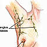

OncoGuía - Tratamientos contra el cáncer
-
 Adenoma de HipófisisGlándula situada en la silla turca
Adenoma de HipófisisGlándula situada en la silla turca -
 ColonLa última porción del aparato digestivo
ColonLa última porción del aparato digestivo -
 Cuello Uterino/Cérvixparte más inferior del aparato rep. femenino
Cuello Uterino/Cérvixparte más inferior del aparato rep. femenino -
 Endometrio/úteroórgano hueco, situado en la pelvis.
Endometrio/úteroórgano hueco, situado en la pelvis. -
 Esófagotubo hueco que transporta los alimentos
Esófagotubo hueco que transporta los alimentos -
 Estómagositúado en la parte alta del abdomen
Estómagositúado en la parte alta del abdomen -
 GliomasSe produce en el cerebro o en la médula espinal
GliomasSe produce en el cerebro o en la médula espinal -

MamaGlándula destinada a la producción de leche
-
 Médula Espinalel tejido nervioso más extenso del cuerpo
Médula Espinalel tejido nervioso más extenso del cuerpo -
 Meduloblastomatumores malignos en la fosa posterior del cerebro
Meduloblastomatumores malignos en la fosa posterior del cerebro -
 MelanomaCrecimiento de los melanocitos
MelanomaCrecimiento de los melanocitos -
 MeningiomasTumor cerebral usualmente benigno
MeningiomasTumor cerebral usualmente benigno -
 No MelanomaEl tumor más frecuente del ser humano
No MelanomaEl tumor más frecuente del ser humano -
 PáncreasGlándula que participa en el proceso de la digestión
PáncreasGlándula que participa en el proceso de la digestión -
 PróstataGlándula sexual exclusiva de los varones
PróstataGlándula sexual exclusiva de los varones -
 RectoLa última porción del aparato digestivo
RectoLa última porción del aparato digestivo -
 Vejigaórgano situado en la parte baja de la pelvis
Vejigaórgano situado en la parte baja de la pelvis
Cáncer de cuello de útero (cérvix)
Tratamiento
El tratamiento del cáncer de cérvix es multidisciplinar y varía en función de la fase en que se encuentre la enfermedad:
Cirugía
Puede ser más o menos conservadora dependiendo de la extensión e invasión del tumor. La conización (extirpar el pequeño tumor) es suficiente si el tumor es in situ (no infiltrante), si el tumor es infiltrante sería preciso extirpar el útero con trompas y ovarios y los ganglios de la pelvis. La cirugía está indicada en las fases más precoces de la enfermedad
Quimioterapia
Generalmente, se asocia a Radioterapia. El objetivo de esta quimioterapia es hacer más sensibles las células tumorales a la radiación (quimioterapia sensibilizante). El fármaco empleado habitualmente es el cisplatino a dosis bajas.
Tratamiento con radiaciones
Desempeña un papel fundamental en el tratamiento de este tumor. La evolución tecnológica ha favorecido el desarrollo de técnicas cada vez más eficaces, precisas y con menos efectos secundarios:
- Radioterapia 3D conformada: Se realiza la planificación empleando un TAC (Tomografía Axial Computerizada o scanner). Para administrar el tratamiento se utiliza aceleradores lineales.
- Radioterapia con intensidad modulada de dosis (IMRT): Es una forma de radiación más precisa que la radioterapia 3D, consigue reducir dosis sobre el tejido sano que rodea al tumor como el recto, vejiga e intestino delgado.
- Radioterapia Guiada por Imagen- IGRT-Tomoterapia: Es una técnica novedosa y de alta tecnología que permite administrar un tratamiento de radioterapia helicoidal, altamente conformado y adaptado a cada paciente, por lo que consigue reducir al máximo la dosis de radiación que llegan a los órganos sanos que rodean el tumor. Una ventaja más de la tomoterapia es que diariamente se realiza una TAC especial que permite conocer la posición exacta del tumor, de los órganos sanos y de la paciente, por lo que se minimiza el riesgo de error en la colocación de la paciente. Los efectos secundarios derivados de este tratamiento son mínimos, por lo que la calidad de vida del paciente durante el tratamiento es excelente.
- Braquiterapia: La mayoría de las veces es preciso administrar tratamiento de radioterapia directamente en el cérvix, para ello se introduce a través de la vagina una especie de cilindros que sitúan la fuente radiactiva en contacto con el tumor. No es un procedimiento doloroso y no requiere ingreso hospitalario. La duración del tratamiento es de unos minutos.
Pronóstico
El desarrollo tecnológico de los últimos años ha permitido una mejora en el diagnóstico y tratamiento del cáncer de cérvix, lo que se traduce en un incremento de la supervivencia en la última década (41% para casos diagnosticados entre 1980 y 1985, y 69% para los diagnosticados entre 1990 y 1994), y se espera que esta tendencia continúe.
La supervivencia global de las pacientes con cáncer de cérvix en España es superior a la media europea y similar a la registrada en EEUU (aproximadamente un 70% a los 5 años tras el diagnóstico).
La mortalidad en España, se puede considerar muy baja (tasa ajustada mundial en 2002: 2,2 muertes/ 100.000habitantes/año) y su tendencia es a disminuir.
Aspecto Psico-Oncológico
La supervivencia y calidad de vida de la mujer con cáncer de cuello de útero han mejorado en la última década y la tendencia continua gracias a los avances en el diagnóstico precoz y en las alternativas terapéuticas. A nivel psicológico, la naturaleza y el tratamiento del cáncer de cuello de útero pueden provocar un estrés añadido para la mujer que lo padece, frecuentemente relacionado con la localización de la enfermedad, con su relación con el Virus del Papiloma Humano y con la aplicación y efectos secundarios de los tratamientos.
Tanto el cáncer de cuello de útero como los tratamientos pueden provocar determinados cambios hormonales, alteraciones reproductivas así como disfunciones sexuales o dificultades en la relación de pareja que pueden afectar a la mujer afectada a nivel emocional. Los avances tecnológicos y científicos han permitido que estos efectos secundarios sean cada vez menos frecuentes.
Una buena comunicación con el equipo médico para informarse sobre la enfermedad y los efectos de los tratamientos, una comunicación sincera y abierta con la pareja y un abordaje psicoterapéutico para el manejo de estas dificultades y el malestar emocional, ayudan la mujer con cáncer de cuello de útero a desarrollar estrategias de afrontamiento orientadas a mejorar su calidad de vida durante y después de la enfermedad.
Si necesita más información sobre cómo afrontar un diagnóstico de un cáncer de cuello de útero, le ofrecemos unas pautas que le podrán ayudar a asumir y a adaptarse a la nueva situación. Puede consultarlas en el apartado de Apoyo Psicológico. Asimismo, si quiere conocer las experiencias y testimonios de personas que han superado esta enfermedad puede consultar en Curados de cáncer.